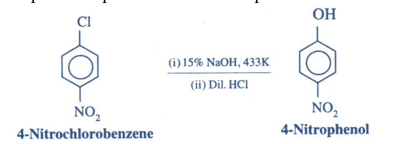
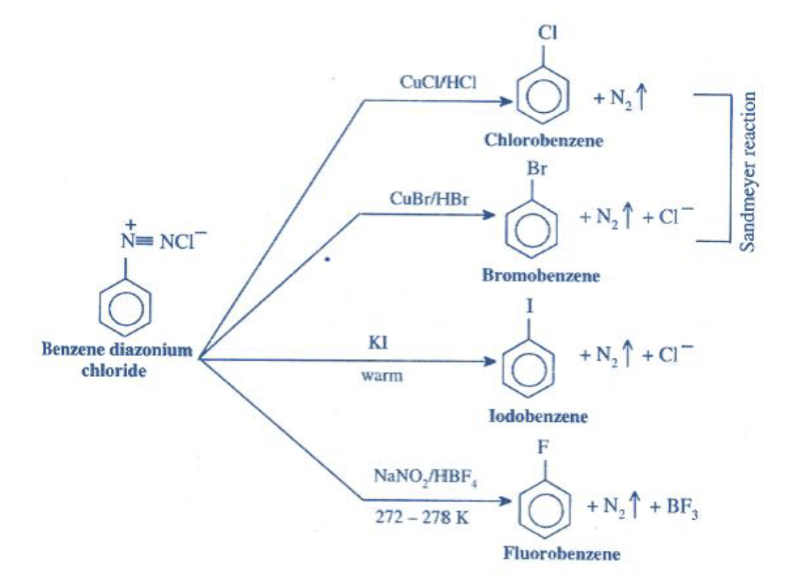

-
Introduction and classification
- Haloalkanes and haloarenes are halogen derivatives of hydrocarbons formed when one or more hydrogen atoms are replaced by halogen atoms such as \(\mathrm{F}\), \(\mathrm{Cl}\), \(\mathrm{Br}\), or \(\mathrm{I}\). In haloalkanes, halogen is attached to an aliphatic carbon; in haloarenes, halogen is directly attached to an aromatic ring.
- Haloalkanes may be classified as methyl, \(1^\circ\), \(2^\circ\), or \(3^\circ\) depending on the carbon bearing halogen. This classification is essential because \(S_\mathrm{N}1\), \(S_\mathrm{N}2\), and elimination reactions depend strongly on the degree of substitution.
- Allylic halides contain halogen on an \(sp^3\)-carbon next to a \(C=C\) bond, while vinylic halides contain halogen directly on a double-bond carbon. Benzylic halides contain halogen on the side-chain carbon next to a benzene ring, while aryl halides have halogen directly attached to the benzene ring.
- For formula-based isomer questions such as \(\mathrm{C_4H_9Br}\), first write all structural isomers and then check stereoisomerism. \(\mathrm{C_4H_9Br}\) has four structural isomers, but 2-bromobutane is chiral, so the total number including stereoisomers is \(5\).
-
Nomenclature of haloalkanes and haloarenes
- In IUPAC naming of haloalkanes, select the longest carbon chain containing the halogen atom and number it so that the carbon bearing halogen gets the lowest possible number. Halogens are written as prefixes such as fluoro, chloro, bromo, and iodo.
- If more than one halogen atom is present, use prefixes such as di-, tri-, and tetra-, and choose the chain containing the maximum number of halogen atoms. Examples include 1,1-dichloroethane and 1,2-dibromopropane.
- Haloarenes are named by adding prefixes such as chloro-, bromo-, or iodo- to the arene name. In disubstituted benzene derivatives, \(o\)-, \(m\)-, and \(p\)- represent 1,2-, 1,3-, and 1,4- substitution respectively.
- Common names such as \(n\)-propyl bromide, isopropyl bromide, sec-butyl chloride, tert-butyl chloride, chlorobenzene, \(o\)-chlorotoluene, and \(p\)-dichlorobenzene are useful for quickly recognising PYQ structures.
-
Nature of carbon-halogen bond
- The carbon-halogen bond in haloalkanes is polar because halogens are more electronegative than carbon. The carbon attached to halogen becomes electron deficient and is attacked by nucleophiles in substitution reactions.
- The \(\mathrm{C-X}\) bond strength decreases in the order \(\mathrm{C-F > C-Cl > C-Br > C-I}\). Therefore, for similar alkyl groups, the general reactivity order in bond-breaking reactions is \(\mathrm{RI > RBr > RCl > RF}\).
- Haloarenes are less reactive than haloalkanes in reactions involving cleavage of \(\mathrm{C-X}\) bond. In aryl halides, resonance gives partial double-bond character to the carbon-halogen bond, making it shorter, stronger, and difficult to break.
- This difference explains why chlorobenzene is much less reactive than benzyl chloride or allyl chloride towards \(S_\mathrm{N}1\). Chlorobenzene cannot easily form a phenyl carbocation, while benzylic and allylic carbocations are resonance-stabilised.
-

-
Methods of preparation of haloalkanes
- Haloalkanes can be prepared by free-radical halogenation of alkanes in sunlight or at high temperature. For example, ethane gives chloroethane with chlorine in sunlight, but direct fluorination is too violent and direct iodination is not useful because it is reversible.
- Alcohols give haloalkanes with hydrogen halides in the presence of suitable conditions. Ethanol gives chloroethane with concentrated \(\mathrm{HCl}\) and anhydrous \(\mathrm{ZnCl_2}\), while ethanol gives bromoethane with \(\mathrm{HBr}\) in the presence of concentrated \(\mathrm{H_2SO_4}\).
- Phosphorus halides convert alcohols into haloalkanes. Important equations are \(\mathrm{3C_2H_5OH + PCl_3 \rightarrow 3C_2H_5Cl + H_3PO_3}\), \(\mathrm{C_2H_5OH + PCl_5 \rightarrow C_2H_5Cl + POCl_3 + HCl}\), and \(\mathrm{3C_2H_5OH + PBr_3 \rightarrow 3C_2H_5Br + H_3PO_3}\).
- Thionyl chloride converts alcohols into alkyl chlorides: \(\mathrm{R-OH + SOCl_2 \rightarrow R-Cl + SO_2 + HCl}\). This method is convenient because \(\mathrm{SO_2}\) and \(\mathrm{HCl}\) escape as gases, leaving a purer alkyl chloride.
- Addition of hydrogen halides to alkenes gives alkyl halides. Without peroxide, \(\mathrm{HBr}\) follows Markovnikov rule; with peroxide, \(\mathrm{HBr}\) follows anti-Markovnikov addition.
- Halogen exchange reactions are useful for preparing specific haloalkanes. Finkelstein reaction uses \(\mathrm{NaI}\) in dry acetone to prepare alkyl iodides, while Swarts reaction uses metallic fluorides such as \(\mathrm{AgF}\), \(\mathrm{Hg_2F_2}\), \(\mathrm{SbF_3}\), or \(\mathrm{CoF_2}\) to prepare alkyl fluorides.
-
Methods of preparation of haloarenes
- Haloarenes are prepared by direct halogenation of aromatic hydrocarbons in the presence of iron or iron(III) halide catalyst. For example, benzene gives chlorobenzene with \(\mathrm{Cl_2/FeCl_3}\) and bromobenzene with \(\mathrm{Br_2/FeBr_3}\).
- Direct iodination of benzene is not useful unless an oxidising agent removes the \(\mathrm{HI}\) formed. Direct fluorination is too violent and cannot be controlled under ordinary conditions.
- Aryl diazonium salts are important intermediates for preparing haloarenes. An aromatic primary amine is converted into diazonium salt using \(\mathrm{NaNO_2/dil.\ HCl}\) at \(273\text{-}278\ \mathrm{K}\), and then the diazonium group can be replaced.
- In Sandmeyer reaction, benzene diazonium chloride reacts with \(\mathrm{Cu_2Cl_2/HCl}\) or \(\mathrm{Cu_2Br_2/HBr}\) to form chlorobenzene or bromobenzene. This is a core route for diazonium-to-haloarene conversions in multistep aromatic questions.
-

- Gattermann reaction also introduces chlorine or bromine into the aromatic ring by treating diazonium salt with copper powder and the corresponding halogen acid.
-
Physical properties
- Lower alkyl halides such as \(\mathrm{CH_3F}\), \(\mathrm{CH_3Cl}\), \(\mathrm{CH_3Br}\), and \(\mathrm{C_2H_5Cl}\) are gases at room temperature, while higher members are generally liquids or solids.
- Haloalkanes and haloarenes are moderately polar but are immiscible in water because they cannot form effective hydrogen bonds with water. They dissolve better in organic solvents.
- Haloalkanes and haloarenes have higher boiling points than the corresponding hydrocarbons because of greater molecular mass, stronger van der Waals forces, and dipole-dipole interactions.
- For the same alkyl or aryl group, boiling point generally increases from fluoro to iodo compounds because the size and polarisability of the halogen increase: \(\mathrm{R-F < R-Cl < R-Br < R-I}\).
- Among dihalobenzenes, the para isomer generally has the highest melting point because its greater symmetry allows better packing in the crystal lattice.
-
Nucleophilic substitution reactions of haloalkanes
- Haloalkanes undergo nucleophilic substitution because the carbon attached to halogen is electron deficient. In a general reaction, \(\mathrm{R-X + Nu^- \rightarrow R-Nu + X^-}\), a stronger nucleophile replaces the weaker nucleophile \(\mathrm{X^-}\).
- Common substitutions include \(\mathrm{R-X \rightarrow R-OH}\) with aqueous \(\mathrm{KOH}\), \(\mathrm{R-X \rightarrow R-CN}\) with \(\mathrm{KCN}\), \(\mathrm{R-X \rightarrow R-OR'}\) with alkoxide, and \(\mathrm{R-X \rightarrow R-NH_2}\) with ammonia.
- \(\mathrm{KCN}\) gives nitriles \(\mathrm{R-CN}\), increasing the carbon chain by one. Hydrolysis of the nitrile gives the corresponding carboxylic acid; therefore \(n\)-propanol \(\rightarrow\) \(n\)-propyl bromide \(\rightarrow\) butanenitrile \(\rightarrow\) butanoic acid.
- \(\mathrm{AgCN}\) behaves differently from \(\mathrm{KCN}\). Alkyl halides with ethanolic \(\mathrm{AgCN}\) give nitrile and mainly isocyanide products; \(\mathrm{R-CN}\) and \(\mathrm{R-NC}\) are functional isomers.
- Williamson ether synthesis uses alkoxide ion and an alkyl halide to form ether. It proceeds best when the alkyl halide is methyl or primary because the mechanism is \(S_\mathrm{N}2\); tertiary halides usually undergo elimination instead.
-
\(S_\mathrm{N}2\) mechanism and stereochemical aspect
- \(S_\mathrm{N}2\) means bimolecular nucleophilic substitution. Its rate depends on both substrate and nucleophile: \(\mathrm{Rate}=k[\mathrm{R-X}][\mathrm{Nu^-}]\).
- In \(S_\mathrm{N}2\), the nucleophile attacks from the backside of the carbon bearing halogen while the carbon-halogen bond breaks. Bond formation and bond breaking occur in one concerted step through a transition state.
-

- The reactivity order for \(S_\mathrm{N}2\) is generally \(\mathrm{CH_3X > 1^\circ > 2^\circ \gg 3^\circ}\). Tertiary halides are very poor \(S_\mathrm{N}2\) substrates because backside attack is sterically blocked.
- Neopentyl halides are primary but unusually slow in \(S_\mathrm{N}2\) because the adjacent highly branched carbon blocks the approach of the nucleophile. This is a common exception to the simple “primary is fast” shortcut.
- Allylic and benzylic primary halides are especially reactive because the transition state is stabilised and the reaction centre is accessible. In Williamson ether synthesis, allylic primary halide can be more reactive than a normal primary halide.
- If an optically active asymmetric alkyl halide undergoes \(S_\mathrm{N}2\), backside attack gives inversion of configuration, known as Walden inversion.
-
\(S_\mathrm{N}1\) mechanism and carbocation stability
- \(S_\mathrm{N}1\) means unimolecular nucleophilic substitution. Its rate depends only on the alkyl halide: \(\mathrm{Rate}=k[\mathrm{R-X}]\), because ionisation of the substrate is the slow, rate-determining step.
- The first step is formation of a carbocation by loss of halide ion; the second step is attack of the nucleophile. Therefore, \(S_\mathrm{N}1\) reactivity follows carbocation stability.
-

- The usual reactivity order is \(\mathrm{3^\circ > 2^\circ > 1^\circ \approx CH_3X}\). Tertiary carbocations are stabilised by \(+I\) effect and hyperconjugation from alkyl groups.
- Benzylic and allylic halides are highly reactive in \(S_\mathrm{N}1\) because their carbocations are resonance-stabilised. A tertiary benzylic carbocation stabilised by two phenyl rings and an alkyl group is especially favoured.
- Aryl halides and vinylic halides are poor \(S_\mathrm{N}1\) substrates. Chlorobenzene resists ionisation due to partial double-bond character in \(\mathrm{C-Cl}\), while vinylic halides would form highly unstable vinylic carbocations.
- In \(S_\mathrm{N}1\) reactions of an optically active asymmetric alkyl halide, the planar carbocation can be attacked from either side, so racemisation or partial racemisation may occur.
-
Elimination reactions of haloalkanes
- Haloalkanes heated with aqueous \(\mathrm{KOH}\) mainly undergo substitution to give alcohols, while haloalkanes heated with concentrated alcoholic \(\mathrm{KOH}\) mainly undergo elimination to give alkenes.
- Elimination of hydrogen halide from adjacent carbon atoms is called \(\alpha,\beta\)-elimination or dehydrohalogenation. The base removes a \(\beta\)-hydrogen while halide leaves from the adjacent carbon.
- If more than one alkene can form, Saytzeff rule predicts that the more substituted alkene is usually the major product. For example, 2-bromobutane gives mainly 2-butene rather than 1-butene.
- Tertiary halides with strong bases commonly give elimination rather than substitution. This explains why tert-butyl chloride with sodium methoxide gives 2-methylpropene instead of tert-butyl methyl ether.
- Dihalides can form alkynes through two successive eliminations. Alcoholic \(\mathrm{KOH}\) removes one molecule of \(\mathrm{HBr}\), and a strong base such as \(\mathrm{NaNH_2}\) removes another molecule from a vinyl halide to form an alkyne.
-
Reactions with metals
- Haloalkanes and haloarenes react with metals such as magnesium, sodium, zinc, and lithium to give organometallic compounds or reduction/coupling products. Organometallic compounds contain a direct carbon-metal bond.
- Grignard reagents are formed by reacting alkyl or aryl halides with magnesium in dry ether: \(\mathrm{R-X + Mg \rightarrow R-MgX}\). They are highly useful for carbon-chain extension and carbonyl addition reactions.
- Grignard reagents with \(\mathrm{D_2O}\) give deuterated hydrocarbons: \(\mathrm{R-MgX + D_2O \rightarrow R-D + MgXOD}\). This is useful for tracking the carbon originally attached to halogen.
- Grignard reagent with \(\mathrm{CO_2}\), followed by acidic hydrolysis, gives carboxylic acid with one extra carbon. If the corresponding sodium carboxylate is heated with sodalime, decarboxylation gives the hydrocarbon.
- Grignard reagents add to carbonyl compounds. Formaldehyde gives primary alcohols, other aldehydes give secondary alcohols, and ketones give tertiary alcohols after hydrolysis.
- Wurtz reaction couples alkyl halides to symmetrical higher alkanes, Fittig reaction couples aryl halides to diaryls, and Wurtz-Fittig reaction couples an aryl halide with an alkyl halide to form alkylbenzene.
- Haloalkanes can be reduced to alkanes using reducing systems such as \(\mathrm{Zn/dil.\ HCl}\), \(\mathrm{HI/red\ P}\), or catalytic hydrogenation. In such reductions, halogen is replaced by hydrogen without changing the carbon skeleton.
-
Reactions of haloarenes
- Haloarenes are usually resistant to ordinary nucleophilic substitution because the aryl \(\mathrm{C-X}\) bond is strengthened by resonance. Chlorobenzene requires drastic conditions such as \(\mathrm{NaOH}\) at high temperature and pressure, followed by acidification, to give phenol.
- Electron-withdrawing groups such as \(-\mathrm{NO_2}\) at ortho or para positions activate haloarenes towards nucleophilic substitution. Thus \(p\)-chloronitrobenzene is converted to \(p\)-nitrophenol much more easily than chlorobenzene.
- Haloarenes undergo electrophilic substitution on the benzene ring. Although halogens are deactivating due to \(-I\) effect, they are ortho-para directing because of resonance donation.
- Nitration of chlorobenzene with concentrated \(\mathrm{HNO_3/H_2SO_4}\) gives a mixture of 2-nitrochlorobenzene and 4-nitrochlorobenzene, with para product often important due to less steric hindrance.
- In alkylbenzenes, \(\mathrm{Cl_2/Fe}\) or \(\mathrm{Cl_2/FeCl_3}\) gives ring chlorination, while \(\mathrm{Cl_2/h\nu}\) or \(\mathrm{Br_2/h\nu}\) gives side-chain benzylic halogenation. The condition decides whether substitution occurs on the ring or side chain.
- Friedel-Crafts alkylation may involve carbocation rearrangement. Benzene with \(n\)-propyl chloride and \(\mathrm{AlCl_3}\) gives isopropyl benzene as the major product because a more stable secondary carbocation-like electrophile is formed.
- Friedel-Crafts acylation introduces \(\mathrm{RCO-}\), not just \(\mathrm{R-}\). Therefore benzene with \(\mathrm{CH_3COCl/AlCl_3}\) gives acetophenone, \(\mathrm{C_6H_5COCH_3}\).
-
Polyhalogen compounds
- Chloroform, \(\mathrm{CHCl_3}\), is trichloromethane. It is a sweet-smelling liquid and is slowly oxidised by air in the presence of light to poisonous phosgene, \(\mathrm{COCl_2}\), so it is stored in dark bottles with a small amount of ethanol.
- Iodoform, \(\mathrm{CHI_3}\), is triiodomethane, a pale yellow solid with a characteristic smell. It is formed in the iodoform test by compounds containing \(\mathrm{CH_3CO-}\) or \(\mathrm{CH_3CH(OH)-}\) groups and has antiseptic use.
- Dichloromethane, \(\mathrm{CH_2Cl_2}\), is widely used as a solvent, paint remover, and cleaning agent. It is volatile, and its vapours are harmful, so exposure should be minimised.
- Carbon tetrachloride, \(\mathrm{CCl_4}\), is tetrachloromethane and was used as a solvent and fire-extinguishing fluid. Its use is restricted because it is toxic and can damage the liver; it is also environmentally harmful.
- Freons are chlorofluorocarbons used historically as refrigerants and aerosol propellants. They are environmentally important because they contribute to ozone-layer depletion.
- DDT is dichlorodiphenyltrichloroethane and contains \(5\) chlorine atoms. It was used to control malaria-carrying mosquitoes and as an agricultural insecticide, but its use is restricted or banned in many places because it is non-biodegradable and accumulates in living organisms.
- Benzene hexachloride, \(\mathrm{C_6H_6Cl_6}\), also called BHC, gammexane, lindane, or 666, is 1,2,3,4,5,6-hexachlorocyclohexane and has been used as an agricultural pesticide.
-


 Elimination in the second reaction
Elimination in the second reaction